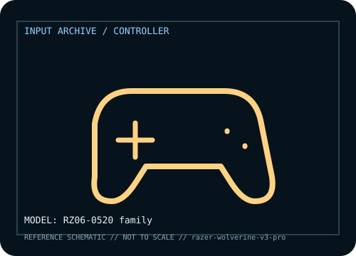

[ GAME CONTROLLERS // IDENTIFIED COMPONENT ]
Razer Wolverine V3 Pro
Wireless pro controller with remappable rear controls, Hall-effect sticks and adjustable triggers.

MODEL IDENTIFICATION: Manufacturer model / identifier: RZ06-0520 family. Compare the unit label, regional suffix, and revision against manufacturer documentation before repair or compatibility claims.
Model specifications
| Catalog subcategory | Game controllers |
|---|---|
| Exact model / ID | RZ06-0520 family |
| Model-specific features | Hall-effect sticks, rear buttons, trigger stops and wireless accessories vary by bundle. |
| Interface and host support | 2.4 GHz receiver or USB wired; platform licensing and PC software support differ. |
| Revision / driver caveat | V3 Pro differs from V2 Pro and Tournament Edition; verify RZ06 code, receiver and platform SKU. |
Preservation and service notes
Store receiver/caps in case; record drift and trigger behavior; protect USB-C and save profiles.
Record the as-found label, accessories, host OS, driver or firmware version, and test method. Separate observed condition from published specifications; family-level claims are not proof of an individual unit's revision.
Manufacturer source
- Razer Wolverine V3 Pro — manufacturer model pageModel-specific manufacturer reference for identifying specifications, regional SKU, and linked current support documentation.
Manufacturer pages can change or retire. Preserve the applicable manual and note its revision when documenting a physical device.